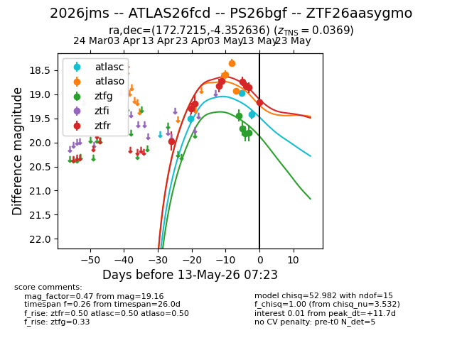
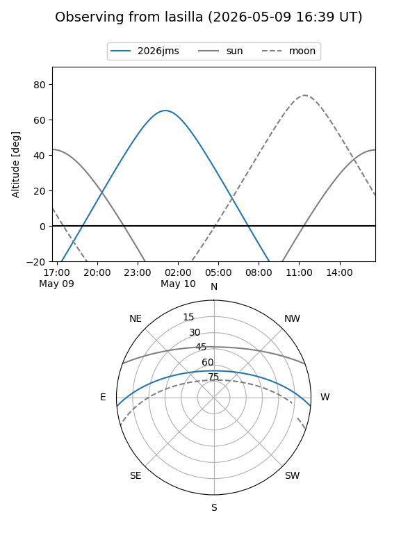
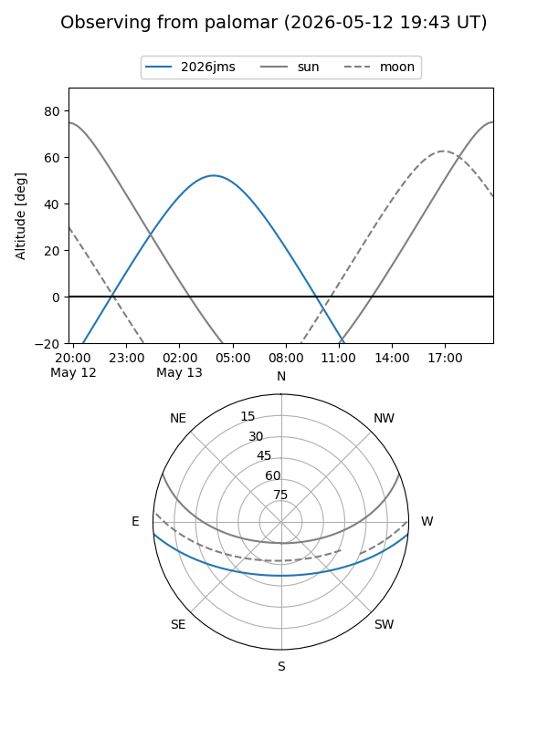
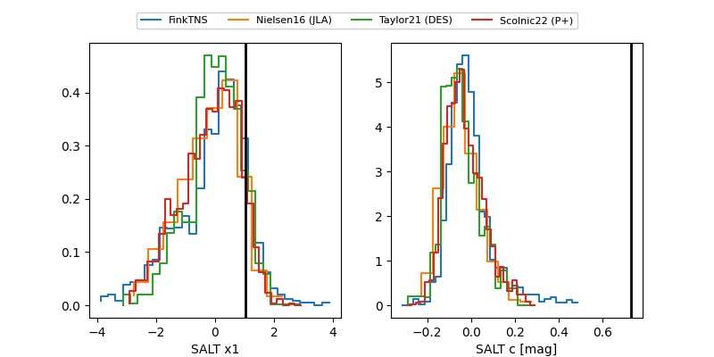

2026jms
Target 2026jms at 2026-05-13 07:25
Aliases and brokers:
FINK: link
Lasair: link
ALeRCE: link
TNS: link
YSE: link
alt names
ZTF26aasygmo (ztf,fink_ztf)
2026jms (tns,yse)
ATLAS26fcd (atlas)
PS26bgf (panstarrs)
Coordinates:
equatorial (ra, dec) = 172.7215,-4.35264
equatorial (HMS+DMS) = 11:30:53.17,-04:21:09.49
galactic (l, b) = (268.1586,+52.99312)
Flags:
Photometry:
last atlasc=19.43, atlaso=18.94, ztfg=19.81, ztfr=19.16
3 atlasc, 3 atlaso, 4 ztfg, 9 ztfr detections
Lightcurve

Visibility


Additional plots
